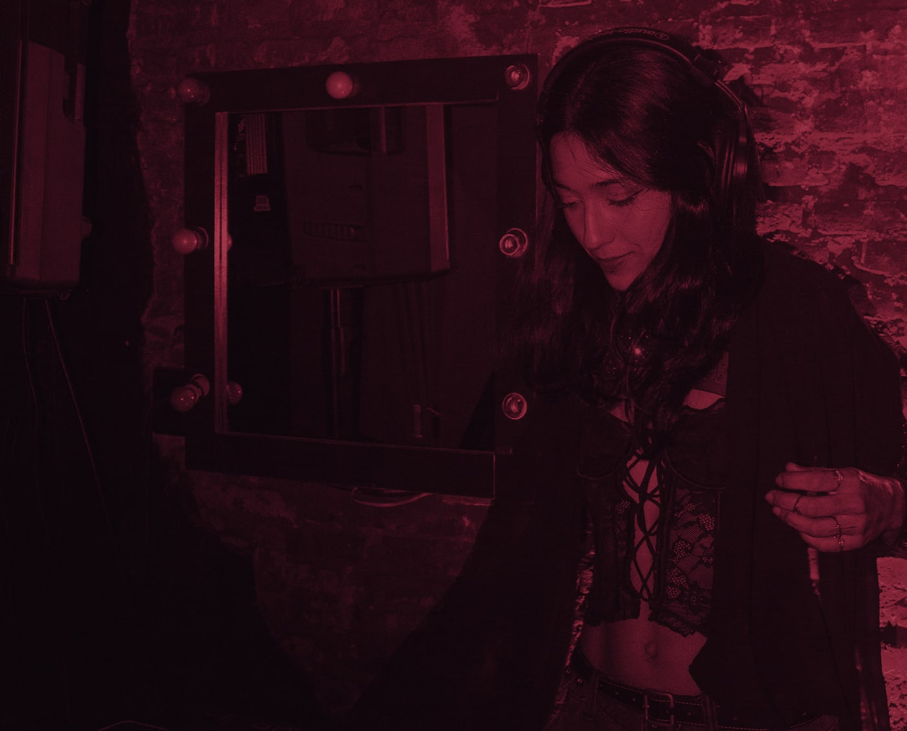
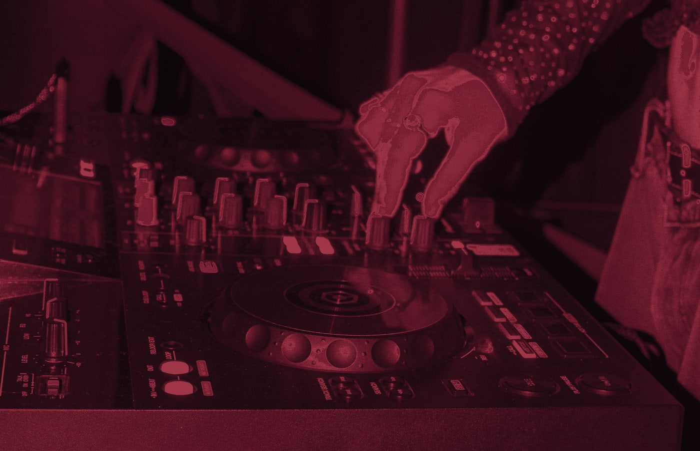

I
Tensão
O set é escrito antes de acontecer. Cada faixa entra porque a anterior pediu.
Techno hipnótico. A linha se repete até deixar de ser contada. O grave chega ao corpo antes do ouvido. A textura abre respiro dentro da repetição.
Não existe pico. Pico é um instante, e instante não sustenta ninguém. O set tem abertura, queda e respiro.
- techno
- hypnotic techno
- groove techno hipnótico e tribal
- robotic techno
- minimal techno
- deep techno
- sonoridades atmosféricas e experimentais
Do eletrônico inteiro. Do que arrasta ao que corta.
II
Suspensão
LIFEGROUND
O LIFEGROUND produz apenas em casa e se sustenta com porta, bar e edições próprias. Não aluga o nome, não assina palco alheio, não vira atração em evento de terceiro.
O LIFEGROUND não sai. Quem sai é Zaphyra. O rito atravessa a porta inteiro, e o espaço é que se ajusta.
Muda o endereço,
nunca a intenção.
Contratar Zaphyra é contratar quem fundou um movimento com corpo próprio.

III
Expansão
Não existe jeito certo
de estar na pista.
Cada pessoa chega com um ritmo. O som ocupa espaço suficiente para que ninguém precise se observar dançando.
O rito não é literal. É o que a música faz com o estado de quem está ali: a repetição sustenta, a textura envolve, e a atenção vira de fora para dentro.
Próximas datas
IV
Liberação
Fechar uma data.
Todo booking passa por aqui. O formulário pergunta data, horário e formato, calcula o cachê e registra o pedido. A agenda é sincronizada nos dois sentidos.
Não é uma caixa de e-mail. É o sistema que fecha a data.